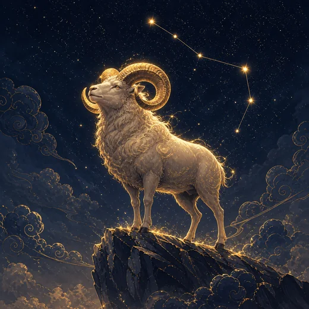

이 게시물은 쿠팡 파트너스 활동의 일환으로, 이에 따른 일정액의 수수료를 제공받습니다.


♈ 양자리 — 성격·연애·궁합·오늘의 운세
양자리 한눈에 보기

양자리는 황도 12궁의 첫 번째 자리입니다. 태양이 춘분점을 지나 다시 북으로 오르기 시작하는 그 순간이 양자리의 시작이라, 점성술에서 양자리는 언제나 '시작'이라는 자리를 맡습니다. 신화에서는 프릭소스와 헬레 남매를 구하기 위해 하늘에서 내려온 황금 양털의 숫양이 이 별자리가 되었다고 전합니다. 누가 부탁하기 전에 먼저 뛰어든 존재라는 점이 이 별자리의 성격을 그대로 요약합니다.
원소는 불이고 양태는 활동궁, 수호성은 화성입니다. 불은 의욕과 추진, 활동궁은 먼저 시작하는 성질, 화성은 결단과 속도를 뜻합니다. 이 셋이 겹치면서 양자리는 '생각보다 몸이 먼저 나가는 자리'가 됩니다. 회의에서 아무도 말을 꺼내지 않을 때 처음 입을 여는 쪽, 계획이 완벽하지 않아도 일단 첫 삽을 뜨는 쪽이 양자리입니다.
강점은 명확합니다. 결정이 빠르고 두려움이 오래가지 않습니다. 실패한 일도 오래 곱씹지 않고 다음 판을 시작합니다. 경쟁 상황에서 힘이 살아나고, 아무것도 없는 상태에서 무언가를 만들어내는 일에 특히 어울립니다. 새 프로젝트의 0에서 1을 만드는 구간에서 양자리의 에너지는 대체하기 어렵습니다.
챙길 점도 같은 자리에서 나옵니다. 시작은 쉬운데 마무리가 지루합니다. 속도가 붙으면 주변의 속도를 못 보고, 화성의 직진성이 인내를 요구하는 상황에서는 마찰로 바뀝니다. 화가 오래가지 않는 대신 순간의 표현이 강해서, 본인은 이미 잊은 말이 상대에게는 오래 남기도 합니다. 양자리의 과제는 늘 '속도를 줄이는 법'이 아니라 '끝까지 가는 법'을 배우는 데 있습니다.
양자리의 연애
좋아하는 마음을 숨기지 못하는 쪽입니다. 화성이 다스리는 자리라 감정도 직진으로 표현되고, 밀당이나 계산이 오래가지 않습니다. 먼저 연락하고 먼저 제안하는 것을 어려워하지 않습니다. 상대가 애매한 태도를 보이면 답답해하다가 스스로 관계를 정리해버리는 쪽이기도 합니다.
연애 초반의 열기가 강한 대신, 익숙해진 뒤의 관리가 과제로 남습니다. 정복하듯 다가가던 에너지가 사라지면 관계가 심심해졌다고 느끼기 쉽습니다. 양자리와 오래가는 관계는 대개 함께 새로운 것을 계속 시도하는 관계입니다. 같은 자리에 머무는 안정보다, 함께 움직이는 리듬이 이 별자리의 애정을 유지시킵니다. 다투더라도 뒤끝이 짧다는 점은 큰 장점입니다.
양자리의 일과 적성
0에서 1을 만드는 구간이 양자리의 무대입니다. 신규 사업, 창업 초기, 새 팀 세팅, 영업 개척처럼 아무도 밟지 않은 길을 먼저 걷는 일에서 능력이 드러납니다. 반대로 이미 굴러가는 시스템을 반복 관리하는 자리에서는 금방 지루해집니다.
경쟁이 있는 환경에서 오히려 성과가 올라갑니다. 목표와 마감이 분명할수록 집중력이 살아나고, 애매한 지시를 받으면 방향을 잃습니다. 조직 안에서는 결정권이 어느 정도 주어질 때 힘을 발휘하며, 세세한 통제를 받으면 의욕이 빠르게 식습니다.
주의할 지점은 마무리입니다. 벌여둔 일이 쌓이면 평가는 시작한 개수가 아니라 끝낸 개수로 매겨집니다. 마감을 남과 공유하거나 마무리를 잘하는 파트너와 짝을 이루면 이 부분은 대부분 해결됩니다.
양자리 궁합
잘 맞는 별자리 — 사자자리, 궁수자리
같은 불 원소끼리는 속도와 온도가 맞습니다. 사자자리와는 서로의 자신감을 깎지 않고 키워주는 조합이고, 궁수자리와는 함께 새로운 것을 벌이는 재미가 오래갑니다. 설명하지 않아도 통하는 부분이 많아 피로가 적습니다.
조율이 필요한 별자리 — 게자리, 염소자리
게자리는 안전과 정서를 먼저 확인하는 물의 자리라, 먼저 움직이고 나중에 설명하는 양자리의 방식이 불안하게 느껴집니다. 염소자리와는 둘 다 활동궁이라 주도권이 겹칩니다. 나쁜 궁합이라기보다 속도와 절차를 미리 합의해야 하는 조합입니다.
양자리 이달의 운세 — 2026년 10월
2026년 10월 — 태양은 ♎ 천칭자리 구간을 지납니다. 양자리 기준 오포지션(180°) 관계, 66점.
태양이 정반대에 섭니다. 관계와 균형이 하루의 주제가 됩니다.
2026년 11월 — 태양은 ♏ 전갈자리 구간을 지납니다. 양자리 기준 퀸컹스(150°) 관계, 62점.
서로 결이 다른 기운이 겹칩니다. 조정과 타협이 필요한 하루입니다.
월 중순(15일) 태양 황경으로 판정한 그 달의 흐름입니다. 날짜별 운세는 별자리 운세에서 생년월일로 보세요.
양자리의 2027년
2027년 하늘에서는 토성과 해왕성이 양자리에 머물러, 양자리는 두 행성과 같은 자리에서 한 해를 보냅니다. 토성은 책임과 한계를, 해왕성은 이상과 모호함을 뜻하는 행성이라, 무엇을 위해 움직이는지 스스로 묻게 되는 해로 읽습니다. 천왕성(쌍둥이자리)과 명왕성(물병자리)과는 섹스타일이라 방향을 바꾸는 시도를 뒷받침하고, 목성이 사자자리에 있는 7월 26일까지는 트라인이라 자연스러운 도움도 붙습니다.
그래서 2027년의 과제는 속도가 아니라 기준입니다. 활동궁 불 원소는 일단 뛰고 보는 편인데, 토성이 머무는 해에는 계획 없이 벌인 일이 무겁게 돌아오기 쉽습니다. 7월 26일까지 목성의 도움이 있는 동안 기반이 될 일 하나를 정해 세우고, 그 뒤에는 늘리기보다 다듬는 쪽이 결과가 남기 쉽습니다.
토성·해왕성은 양자리, 천왕성은 쌍둥이자리, 명왕성은 물병자리에 머물고, 목성은 7월 26일에 사자자리에서 처녀자리로 옮깁니다. 각은 별자리 단위로 본 것이라 정밀한 해석은 출생 차트가 필요합니다. 12별자리를 한 장에서 견주려면 2027 정미년 한눈에 표를 보세요.
양자리의 2026년
양자리의 한 해는 1월이 아니라 춘분 무렵부터 다시 시작합니다. 태양이 자기 자리로 돌아오는 3월 하순부터 4월 중순이 개인적인 새해에 해당하고, 이 시기에 세운 방향이 한 해 전체의 기조가 됩니다. 2026년에는 연초에 결론을 서두르기보다 3~4월에 판을 다시 짜는 편이 이 별자리의 리듬에 맞습니다.
활동궁 불 원소는 벌이는 데 강하고 지키는 데는 조금 더 신경 쓰면 좋습니다. 그래서 2026년의 과제는 새로 시작한 것의 개수가 아니라, 그중 하나를 연말까지 끌고 가는 일입니다. 상반기에 세 가지를 벌였다면 하반기에는 하나를 골라 끝내는 쪽이 결과가 남습니다.
자주 묻는 질문
양자리는 몇 월생인가요?
3.21~4.19 사이에 태어난 사람이 양자리입니다. 다만 태양이 별자리 경계를 넘는 시각은 해마다 하루 안팎으로 달라지므로, 경계일 출생이면 날짜표 대신 별자리 운세 페이지에서 생년월일로 판정하는 편이 정확합니다.
양자리에게 2027년은 어떤 해인가요?
2027년 하늘에서는 토성과 해왕성이 양자리에 머물러, 양자리는 두 행성과 같은 자리에서 한 해를 보냅니다. 토성은 책임과 한계를, 해왕성은 이상과 모호함을 뜻하는 행성이라, 무엇을 위해 움직이는지 스스로 묻게 되는 해로 읽습니다. 천왕성(쌍둥이자리)과 명왕성(물병자리)과는 섹스타일이라 방향을 바꾸는 시도를 뒷받침하고, 목성이 사자자리에 있는 7월 26일까지는 트라인이라 자연스러운 도움도 붙습니다.
양자리와 잘 맞는 별자리는?
사자자리와 궁수자리가 대표적입니다. 같은 불 원소끼리는 속도와 온도가 맞습니다. 사자자리와는 서로의 자신감을 깎지 않고 키워주는 조합이고, 궁수자리와는 함께 새로운 것을 벌이는 재미가 오래갑니다. 설명하지 않아도 통하는 부분이 많아 피로가 적습니다. 반대로 게자리와 염소자리는 조율이 필요한 조합입니다.
양자리 성격의 핵심은 무엇인가요?
불 원소, 활동궁, 수호성 화성의 조합으로 봅니다. 이 셋이 겹치는 지점이 양자리의 성격을 만듭니다. 자세한 내용은 위 본문에서 확인하세요.